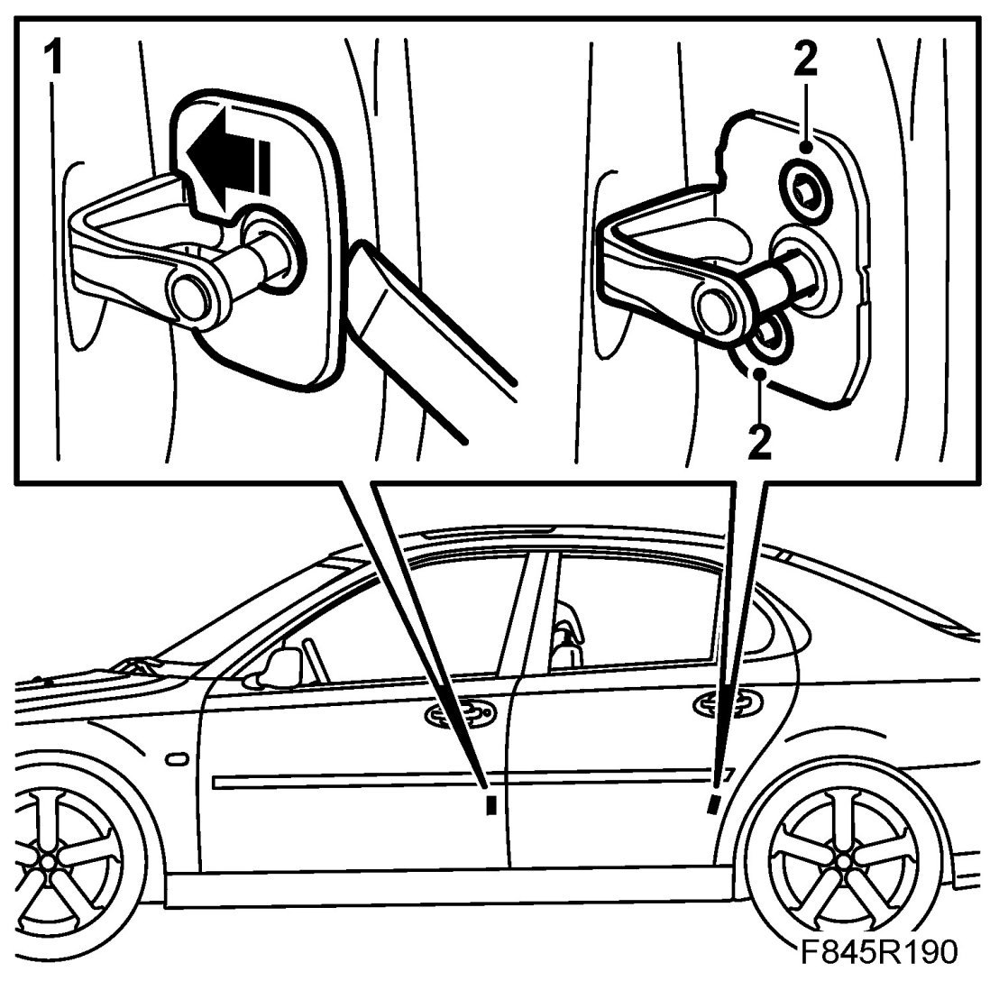
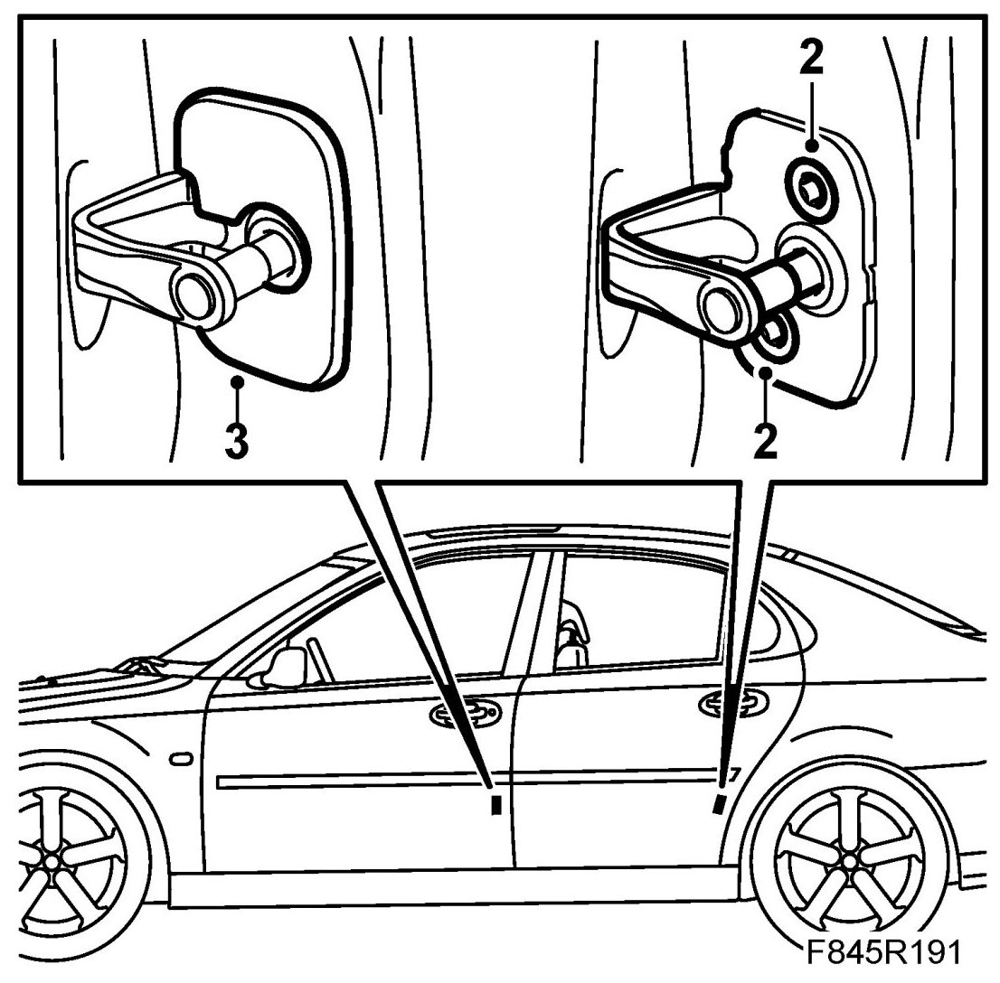

Front Door Striker: Service and Repair
Striking-Plate
Removing
1. Certain variants: Remove the cover with a removal tool. Start from the outside of the cover and loosen the clip. Move the cover inward in order to loosen the inner clips.

2. Remove the screws and lift out the striking-plate
Fitting
1. Position the striking-plate.
2. Fit the screws. Adjust the striking plate.

3. Certain variants: Fit the cover by hooking the inner clips first and fastening the outside of the cover.